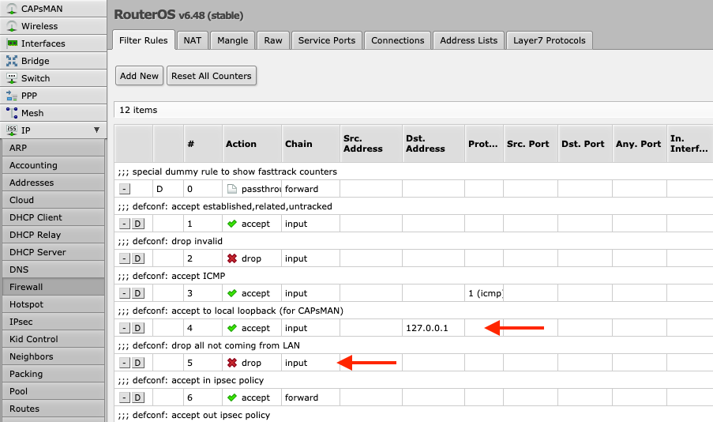
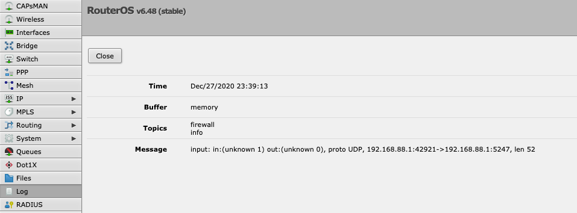
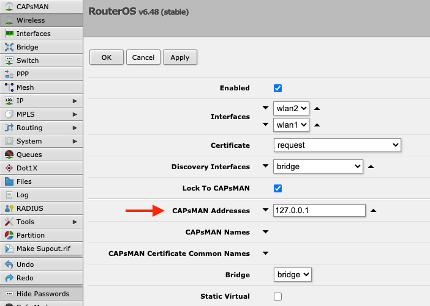
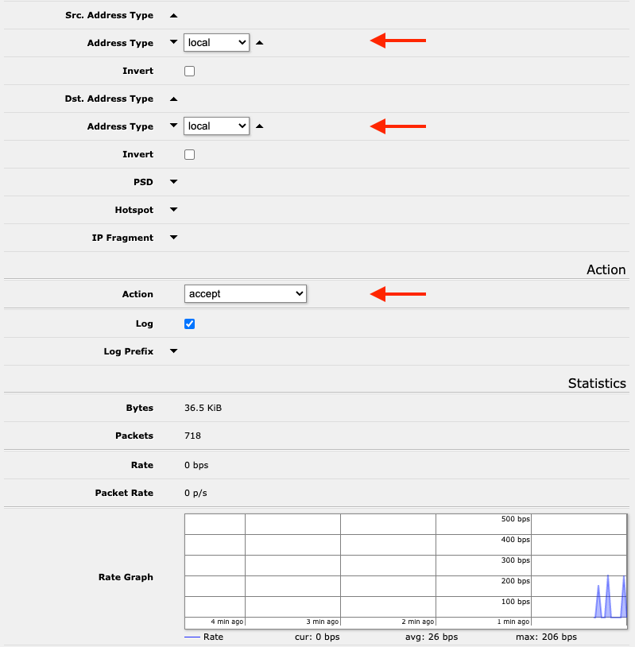

Mikrotik routers use CAPsMAN (Controlled Access Point Manager) to configure and synchronize a mesh of wireless access points or CAPs (Controlled Access Points). This is extremely useful for setting up multiple access points with the exact same WiFI name or SSID and security settings, and a dedicated guest network, for example.
Sidenote: I wish there was brief description under each RouterOS configuration panel that would describe the purpose of the particular section or just link to the relevant wiki page. The amount of abbreviations used throughout the RouterOS management interface makes it really difficult for anyone new to the platform.
How does CAPsMAN work?
Behind the scenes CAPsMAN uses either MAC (Layer 2) or UDP packets over IP (Layer 3) to discover and configure the access points.
All of this communication can be secured and encrypted via Datagram Transport Layer Security (DTLS) which is very similar to Transport Layer Security (TLS) used on the web but for UDP packets. RouterOS takes care of generating the certificate authority (CA) certificate and the associated keys.
I wonder how similar it is to CAPWAP?
Using CAPsMAN with a Local Access Point (CAP)
CAPsMAN can also configure an access point or CAP running on the same device as CAPsMAN itself. However, it might require additional firewall rules to allow the communication between the CAP and the CAPs manager.
By default, RouterOS adds the following firewall rule to allow local CAPsMAN to communicate with the local CAP:
action=accept chain=input dst-address=127.0.0.1 comment="defconf: accept to local loopback (for CAPsMAN)"but all of the local CAPsMAN communication will be blocked by the following rule (also added by default) that prohibits all traffic coming to the router from outside the LAN interface list:
action=drop chain=input in-interface-list=!LAN comment="defconf: drop all not coming from LAN"
That’s because all of the CAPsMAN traffic looks like this to the router:
input: in:(unknown 1) out:(unknown 0), proto UDP, 192.168.88.1:42921->192.168.88.1:5247, len 52
Notice how the in and out interfaces are shown as unknown in the logs because CAPsMAN uses the MAC layer instead of the IP layer for the communication which makes the traffic appear to be invalid. See this forum thread for additional insight.
There are two solutions to this:
First, configure the local CAP to use 127.0.0.1 as the CAPsMAN address:
/interface wireless cap
set bridge=bridge caps-man-addresses=127.0.0.1which will make it use the IP layer for CAPsMAN communication and will therefore honour the local loopback firewall rule.

Alternatively, add a new firewall input rule (for everything going to the router not just passing through) to allow traffic from the local address type into the local address type of the router:
/ip firewall filter
add action=accept chain=input dst-address-type=local src-address-type=local comment="Accept local CAPsMAN config"and place it before anything that is blocking non-local traffic.

Useful Links
Here are posts and forum threads I’ve found useful when learning about RouterOS CAPsMAN:
- Guest WiFi setup with bandwidth limits.
- Guest WiFi firewall configuration and best practices (in Russian). They have a lot of great Mikrotik related articles.
- Generic CAPsMAN setup with focus on access-point roaming (in Russian).